Mount Goode Northeast Buttress
- Mt. Goode, Northeast Buttress (5.5, IV)
- July 27-29, 2002
Saturday morning Chris Koziarz and I hiked in from Rainy Pass. We took a 8.5 mm 60 meter rope, one ice tool and 2 screws in case of glacier difficulties. We had a light rock rack. I wore Vasque Sundowner boots and brought aluminum crampons. A light canister stove would cook our meals. The usual bivy-sack equipment came along too. Chris wore heavier boots, but hiked in sandals all the way to Grizzly Creek.
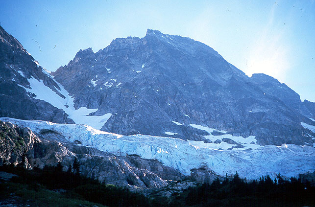
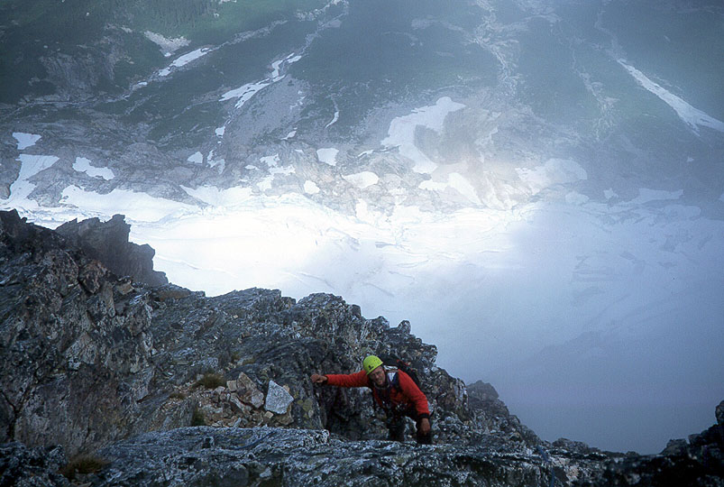
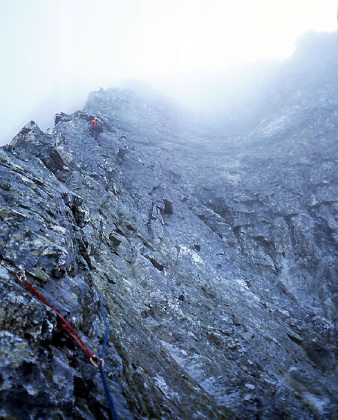
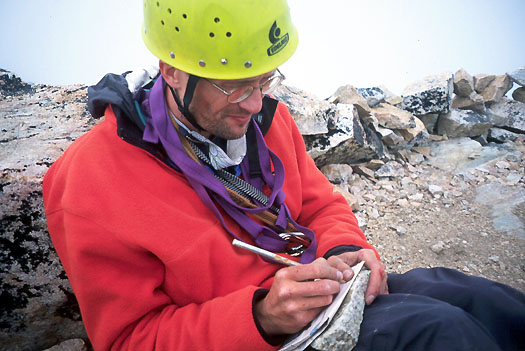
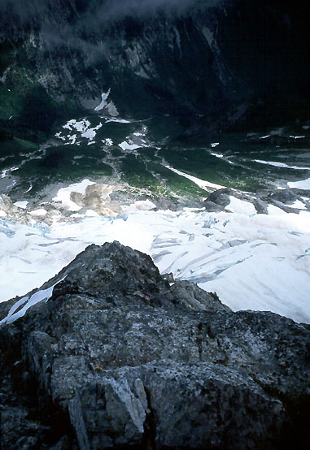
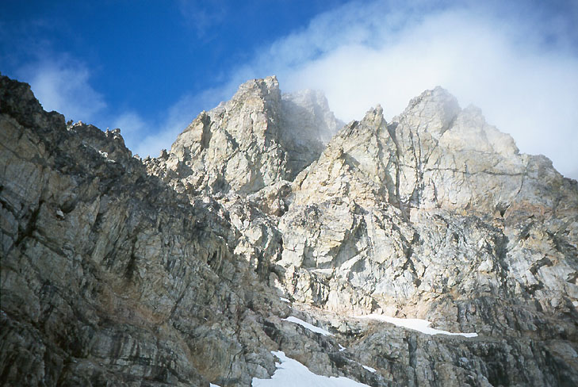
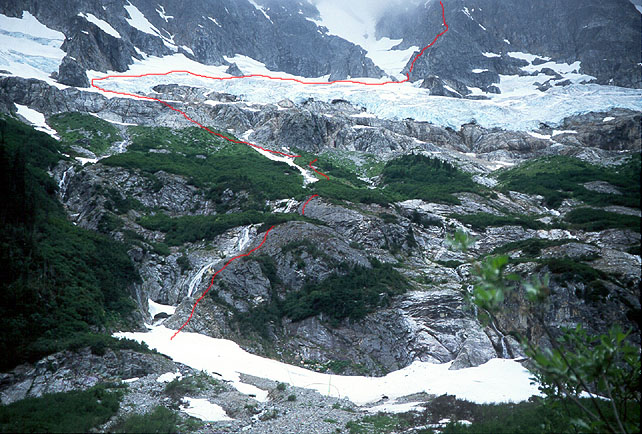
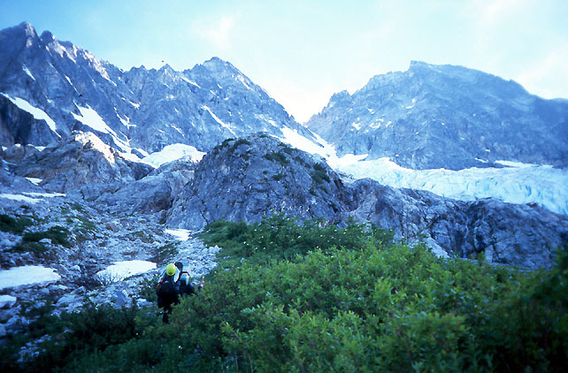
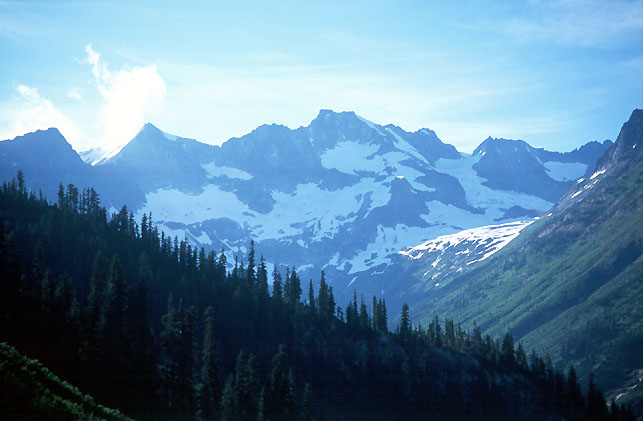
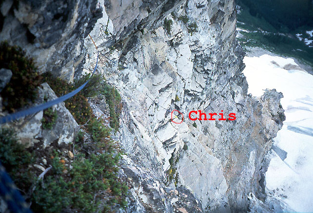
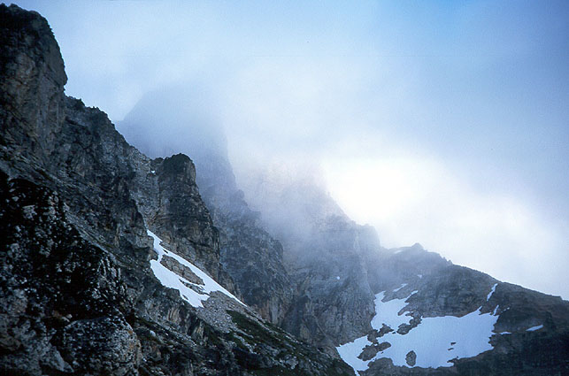
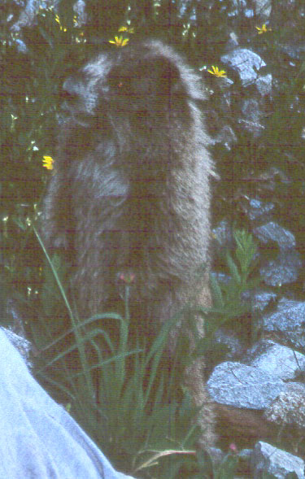
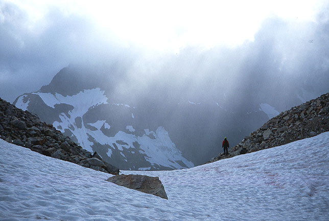
The PCT was uninteresting for long periods. Finally, after about 8 miles the river became a gorge, with exciting crags on both sides. We crossed a creek on a swaying footbridge. After another mile of hiking, we took a”short cut” from the PCT to North Fork Bridge Creek, by leaving the trail at 3000 ft. elevation, and side-hilling to the right. This took about 10-15 minutes, and saved a descent to the river, which looked pretty far down. After the Grizzly Creek junction (crossed on a log 3 miles from our short cut), we hiked another 3/4 mile to the climbers trail going down to the creek. A pretty scary log crossing (Chris said he couldn’t breathe), then we followed Beckey’s directions through timber and brush to talus slopes below slabs. The way was fairly obvious up 3rd class slabs and brush, with an occasional harder move. We were happy to see rappel stations above such locations! The steep ground now behind us, we hiked up along a stream course to the usual bivy site at 5100 feet. Take advantage of it - there are no other flat spots in this basin.
The basin is very wild. From the river below, you view an entire eco-system, going from brush to talus, cliff to snow, ice to rock, rising 6000 feet in 1.6 miles. Dozens of waterfalls spill through the cliffs. Menacing chunks of ice hang above, and the black rock of Goode itself seems impossibly remote, usually in the clouds.
We fought with a marmot who tried to steal and chew anything not locked down, and battled with hordes of mosquitoes biting us around the face (only exposed skin). During the night, clear skies reassured us.
But dawn brought gray clouds, and scarier black clouds in the east. We weren’t getting rained on, so it seemed worthwhile to continue. Climbing onto the glacier at the far left, we dealt with a short icy crevasse problem, then easily walked snow above the ice cliffs to the left side of the buttress toe. The moat looked very difficult at first, but hiking down 100 feet found a place where suspended ice blocks allowed us to tip-toe across. As we prepared for the rock climb, some of these blocks fell into the depths!
Right away, we encountered steep 5th class climbing. We had doubled the rope, so leads were short (100 feet), and this was a little annoying, as it took effort to build even a marginal belay on the alternately slabby or loose rock. We trended right for two pitches, making for a solitary scrub tree. But overhangs began to appear, and I climbed leftward for the last pitch, mostly traversing. This was the right choice, eventually reaching the buttress crest at a broad, low-angle shoulder. The next pitch was about 600 feet of 3rd and 4th class terrain. We were happy to move quickly after the initial difficulties. Chris really stretched our gear, probably for another 400 feet of increasingly interesting terrain. Now the buttress crest became sharp, and I led two exciting pitches on a knife edge. I resorted to an aid move above the pitch two belay. The only cracks for gear were between loose blocks that expanded when I tugged on the cam or nut, and a difficult slab move (in boots) lay ahead. A body weight piece served as a handhold, then foothold. Even with that, I reached the top of the slab breathing heavily. Chris scoffed at my 5.8+/A0 rating from the security of the top rope!
Occasionally the clouds would blow away, and we’d see the glacier and river below. This was exciting! A patch of blue above would appear, and I’d imagine us on the summit with a”sea of clouds” view. But these were sucker holes - we would find ourselves sitting in the clouds admiring the carved out bivy sites right on the summit, chagrined at the weather.
After some more simulclimbing (we only belayed 6 pitches, 3 of them right above the glacier) on rock that was changing to beautiful golden granite, we reached bivy sites and the traverse to the Black Tooth Notch (taken on our descent). 300 feet more, and we were on the summit, 9.5 hours from our camp. We thought this was pretty good, until we read of Haley/Paull in the summit register - 7 hours from the Stehekin shuttle to the summit. They had (probably) made the first day trip of the climb on 7/15. We were subdued, wanting to think about the great climbing we had enjoyed, but worried about the long descent.
Climbing and rappelling down to the notch (an exposed but easy traverse gets there), we emerged on the south side of the mountain, and began rappelling down the loose SW Couloir. Three rappels got us to walkable terrain, then we followed a cairn around a ledge in order to avoid slabby cliffs. More walking led down to a snow bowl at ~7000 feet. The view of the mountain was just as impressive from this side - vertical golden towers, appearing and disappearing behind fast moving clouds. The wind was becoming fierce, and knocked us off balance as we traversed the mountain to the Goode/Storm King Col. We found trickling water in a heathery meadow below the col, a sweet surprise! We ached to climb Storm King, it was so close and easy-looking. But we had enough work ahead of us to get back to camp, that we were forced to restrain ourselves (a good choice, but not enough to save us).
From the incredibly windy col, we made an overhanging rappel to the Goode Glacier (felt rather committing). The downclimbing went well, and we crossed a bergschrund on a good snowbridge. More crevasses were easily crossed as sections of the glacier buckled and heaved, making us worry about getting down. We made a crucial decision to traverse far to the right above an ice cliff, rather than descend a steep snow slope we’d seen down in the valley. As we made our diagonal descent, we shivered at the good fortune our choice had provided: the steep snow slope turned to black ice, and ended in a jumble of seracs and crevasses.
It was already evening, and darkness came early due to persistent cloud cover, and a light rain. Getting off the glacier was slow. My crampons balled up with snow often, and my hiking boots weren’t heavy enough to make a good plunge-step. We left the glacier, reaching a cliff that provided a dim view of the basin and our camp. Unroping, we climbed down slabs, sure that a hot meal and sleeping bag awaited us within the hour. It was 9 pm, 15 hours after we started. But the slabs became steep, and slick with water and moss. Full darkness found us traversing waterfalls and climbing up and down in exasperation. I nearly slipped in a streambed, feeling the cold shock of water down my sleeve when I reflexively reached up for a rock under the spray. We knew this was very ill-advised, certainly the most dangerous part of the trip. After some debate, we climbed back up to the glacier, and found a snow slope leading further down, hopefully below the steep slabs. At first we were encouraged, getting several hundred feet lower, then finding ourselves in similar terrain. Like persistent insects, we tried again. This time we were lucky, as a pattern of shrubs allowed a belayed descent of a weeping slab. We had reached the basin!
Now for the tedious traverse to camp. But after an hour, camp was nowhere to be found. Many theories were explored. Half-visible humps in the darkness were, or could be, remembered shapes from the morning. I was out of steam, but Chris made an energetic traverse to the far end of the basin and back. I knew we were close, but despite various ascents and descends of brushy ribs we always came up empty. At 1 am I sat in the heather, prepared to wait for morning. Anything to stop moving! Chris toiled for another hour, sailing from dim reef to atoll, his lamp visible in the fog. The basin seemed lonelier with the solitary lamp bobbing far away from my perch. He returned, and we tried to get comfortable in”camp.” The rain was light enough that it didn’t make us wet for a long time.
The long vigil isn’t worth recounting. Thoughts circled back to the climb (which I still considered”fun”), but were wrenched back to gnaw on the bones of”finding camp” and”escaping.” Sometime after 4:30 am, we could see enough, that it hit us both at the same time - we were right above camp. We hadn’t explored directly below because of worrisome slabs. As we prepared to leave, my bivy sack below grew neon bright, seemingly delighted at the irony.
We returned to a trashed camp. Chris didn’t hang some items in the small tree, and they were scattered or taken by the intrepid marmot. One hiking pole was extensively chewed, another was gone. A shirt drying on a tree was filled with holes and matted with mud. Chris muttered about various poisoning schemes, I found it rather funny, and was thankful that the marmot spared our expensive bivy sacks. Actually, my hiking pole was improved - he had”softened” the strap material nicely. Again the mosquitoes found us, and we conked out for 4 hours, feet deliciously dry and warm!
Finally moving down at noon, we entered the brush, downclimbing and rappelling, slowly reaching the valley floor. This time, we found a snowbridge to cross the creek. It was pretty thin. We crawled across and pulled the packs afterwards. It was 3:00, finally we were hikers again! Near Grizzly Creek we saw a black bear in the forest, about 100 feet off the trail.”Bear,” I said weakly.”No biggie.” He moved on a parallel course for a while, then allowed us to continue unmolested.
The last eight miles of the hike out was marked by”trail madness,” a surge of desperate energy directed to escaping. At 9:15, I rolled into a fetal position by the car. Chris produced a magic elixir: Safeway grape juice!